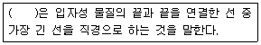
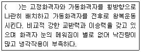
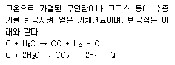
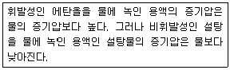
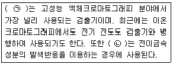
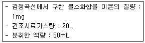
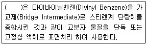
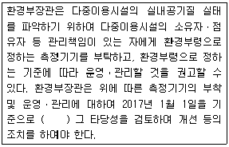
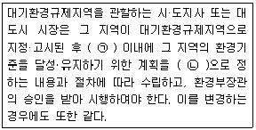

대기환경기사 (2018-04-28 기출문제)
1과목: 대기오염 개론
1. 이동 배출원이 도심지역인 경우, 하루 중 시간대별 각 오염물의 농도 변화는 일정한 형태를 나타내는데, 다음 중 일반적으로 가장 이른 시간에 하루 중 최대 농도를 나타내는 물질은?
- O3
- NO2
- NO
- Aldehydes
(정답률: 66%)

2. 다음 중 대기오염물질의 분산을 예측하기 위한 바람장미(wind rose)에 관한 설명으로 가장 거리가 먼 것은?
- 바람장미는 풍향별로 관측된 바람의 발생빈도와 풍속을 16방향인 막대기형으로 표시한 기상도형이다.
- 가장 빈번히 관측된 풍향을 주풍(prevailing wind)이라 하고, 막대의 굵기를 가장 굵게 표시한다.
- 관측된 풍향별 발생빈도를 %로 표시한 것을 방향량(vector)이라 하며, 바람장미의 중앙에 숫자로 표시한 것은 무풍률이다.
- 풍속이 0.2m/sec 이하일 때를 정온(calm)상태로 본다.
(정답률: 81%)
3. 표준상태에서 SO2농도가 1.28g/m3라면 몇 ppm인가?
- 약 250
- 약 350
- 약 450
- 약 550
(정답률: 65%)
4. 다음 중 London형 스모그에 관한 설명으로 가장 거리가 먼 것은? (단, Los Angeles형 스모그와 비교)
- 복사성 역전
- 습도가 85%이상
- 시정거리가 100m 이하
- 산화반응
(정답률: 75%)
5. 다음 특정물질 중 오존 파괴지수가 가장 큰 것은?
- CFC-113
- CFC-114
- Halon-1211
- Halon-1301
(정답률: 81%)
6. 리차드슨 수에 관한 설명으로 옳은 것은?
- 리차드슨 수가 -0.04보다 작으면 수직방향의 혼합은 없다.
- 리차드슨 수가 0이면 기계적 난류만 존재한다.
- 리차드슨 수가 0에 접근하면 분산에 커져 대류혼합이 지배적이다.
- 일차원 수로서 기계난류를 대류난류로 전환시키는 율을 측정한 것이다.
(정답률: 76%)
7. 혼합층에 관한 설명으로 가장 적합한 것은?
- 최대혼합깊이는 통상 낮에 가장 적고, 밤시간을 통하여 점차 증가한다.
- 야간에 역전이 극심한 경우 최대혼합깊이는 5000m 정도까지 증가한다.
- 계절적으로 최대혼합깊이는 주로 겨울에 최소가 되고 이른 여름에 최대값을 나타낸다.
- 환기량은 혼합층의 온도와 혼합층 내의 평균풍속을 곱한 값으로 정의된다.
(정답률: 74%)
8. 각 오염물질의 대사 및 작용기전으로 옳지 않은 것은?
- 알루미늄화합물은 소장에서 인과 결합하여 인 결핍과 골연화증을 유발한다.
- 암모니아와 아황산가스는 물에 대한 용해도가 높기 때문에 흡입된 대부분의 가스가 상기도 점막에서 흡수되므로 즉각적으로 자극증상을 유발한다.
- 삼염화에틸렌은 다발성신경염을 유발하고, 중추신경계를 억제하는데 간과 신경에 미치는 독성이 사염화탄소에 비해 현저하게 높다.
- 이황화탄소는 중추신경계에 대한 특징적인 독성작용으로 심한 급성 또는 아급성 뇌병증을 유발한다.
(정답률: 63%)
9. 주요 배출오염물질과 그 발생원과의 연결로 가장 관계가 적은 것은?
- HF - 도장공업, 석유정제
- HCl - 소다공업, 활성탄제조, 금속제련
- C6H6 - 포르말린제조
- Br2- 염료, 의약품 및 농약 제조
(정답률: 64%)
10. 각 오염물질의 특성에 관한 설명으로 옳지 않은 것은?
- 염소는 암모니아에 비해서 훨씬 수용성이 약하므로 후두에 부종만을 일으키기 보다는 호흡기계 전체에 영향을 미친다.
- 포스겐 자체는 자극성이 경미하지만 수중에서 재빨리 염산으로 분해되어 거의 급성 전구증상이 없이 치사량을 흡입할 수 있으므로 매우 위험하다.
- 브롬화합물은 부식성이 강하며 주로 상기도에 대하여 급성 흡입효과를 지니고, 고농도에서는 일정기간이 지나면 폐부종을 유발하기도 한다.
- 불화수소는 수용액과 에테르 등의 유기용매에 매우 잘 녹으며, 무수불화수소는 약산성의 물질이다.
(정답률: 57%)
11. 다음은 입경(직경)에 대한 설명이다. ( ) 안에 알맞은 것은?

- 휘렛 직경
- 마틴 직경
- 공기역학적 직경
- 스토크스 직경
(정답률: 77%)
12. 지표부근의 공기덩이가 지면으로부터 열을 받는 경우 부력을 얻어 상승하게 되는데 상승과정에서 단열변화가 이루어져 어떤 고도에 이르면 상승한 공기 중에 들어있는 수증기는 포화되고 응결이 이루어진다. 이와 같이 열적 상승에 의해 응결이 이루어지는 고도를 일컫는 용어로 가장 적합한 것은?
- 대류응결고도(CCL)
- 상승응결고도(LCL)
- 혼합응결고도(MCL)
- 상승지수(LI)
(정답률: 58%)
13. 최대 혼합고도를 400 m로 예상하여 오염농도를 3 ppm으로 추정하였는데, 실제 관측된 최대 혼합고도는 200 m였다. 실제 나타날 오염농도는? (단, 기타 조건은 같음)
- 21 ppm
- 24 ppm
- 27 ppm
- 29 ppm
(정답률: 71%)
14. 냄새물질에 대한 다음 설명 중 옳지 않은 것은?
- 분자내 수산기의 수가 1개 일 때 가장 약하고, 수가 증가하면 강한 냄새를 유발한다.
- 골격이 되는 탄소 수는 저분자일수록 관능기 특유의 냄새가 강하다.
- 에스테르화합물은 구성하는 산이나 알코올류보다 방향이 우세하다.
- 분자 내에 황 및 질소가 있으면 냄새가 강하다.
(정답률: 77%)
15. 라돈에 관한 설명으로 가장 거리가 먼 것은?
- 일반적으로 인체의 조혈기능 및 중추신경계통에 가장 큰 영향을 미치는 것으로 알려져 있으며, 화학적으로 반응성이 크다.
- 무색, 무취의 기체로 액화되어도 색을 띠지 않는 물질이다.
- 공기보다 9배 정도 무거워 지표에 가깝게 존재한다.
- 주로 토양, 지하수, 건축자재 등을 통하여 인체에 영향을 미치고 있으며 흙속에서 방사선 붕괴를 일으킨다.
(정답률: 78%)
16. 질소산화물(NOx)에 관한 설명으로 가장 거리가 먼 것은?
- N2O는 대류권에서는 온실가스로 성층권에서는 오존층 파괴물질로서 보통 대기 중에 약 0.5ppm 정도 존재한다.
- 연소과정 중 고온에서는 90% 이상이 NO로 발생한다.
- NO2는 적갈색, 자극성 기체로 독성이 NO보다 약 5배 정도나 더 크다.
- NO의 독성은 오존보다 10~15배 강하여 폐렴, 폐수종을 일으키며, 대기 중에 체류시간은 20~100년 정도이다.
(정답률: 63%)
17. 다음 오염물질의 균질층 내에서의 건조공기 중 체류시간의 순서배열(짧은 시간에서부터 긴 시간)로 옳게 나열된 것은?
- N2- CO - CO2- H2
- CO - CH4- O2- N2
- O2- N2- H2- CO
- CO2- H2- N2- CO
(정답률: 69%)
18. 다음 식물 중 에틸렌가스에 대한 저항성이 가장 큰 것은?
- 완두
- 스위트피
- 양배추
- 토마토
(정답률: 61%)
19. Deacon의 공식을 이용하여 지표높이 10m에서의 풍속이 2m/s일 때, 고도 100m에서의 풍속은? (단, P : 0.4)
- 약 5.0 m/s
- 약 8.7 m/s
- 약 10.6 m/s
- 약 15.1 m/s
(정답률: 62%)
20. 역선풍(Anticyclone)구역 내에서 차가운 공기가 장시간 침강(단열적)하였을 때 공기덩어리 상부면(Top)과 하부면(Bottom)의 온도차(변화)를 바르게 표시한 것은? (단, dT/dP는 압력에 대한 온도 변화이며, 이상기체로 작용한다.)
- (dT/dP)Top ＜ (dT/dP)Bottom
- (dT/dP)Top ＞ (dT/dP)Bottom
- (dT/dP)Top = (dT/dP)Bottom
- (dT/dP)Top ≤ (dT/dP)Bottom
(정답률: 71%)
2과목: 연소공학
21. 다음 중 기체연료의 연소장치로서 천연가스와 같은 고발열량 연료를 연소시키는데 가장 적합하게 사용되는 버너의 종류는?
- 선회형 버너
- 방사형 버너
- 회전식 버너
- 건타입 버너
(정답률: 65%)
22. 중유에 관한 설명과 거리가 먼 것은?
- 점도가 낮은 것이 사용상 유리하고, 용적당 발열량이 적은 편이다.
- 인화점이 높은 경우 역화의 위험이 있으며, 보통 그 예열온도보다 약 2℃ 정도 높은 것을 쓴다.
- 점도가 낮을수록 유동점이 낮아진다.
- 잔류탄소의 함량이 많아지면 점도가 높게 된다.
(정답률: 56%)
23. 다음은 가동화격자의 종류에 관한 설명이다. ( )안에 알맞은 것은?

- 부채형 반전식 화격자
- 병렬요동식 화격자
- 이상식 화격자
- 회전 롤러식 화격자
(정답률: 74%)
24. 메탄 1mol이 완전연소할 때 AFR은? (단, 몰기준)
- 6.5
- 7.5
- 8.5
- 9.5
(정답률: 61%)
25. 연료의 종류에 따른 연소 특성으로 옳지 않은 것은?
- 기체연료는 저발열량의 것으로 고온을 얻을 수 있고, 전열효율을 높일 수 있다.
- 액체연료는 화재, 역화 등의 위험이 크며, 연소온도가 높아 국부적인 과열을 일으키기 쉽다.
- 액체연료는 기체연료에 비해 적은 과잉공기로 완전연소가 가능하다.
- 액체연료의 경우 회분은 아주 적지만, 재속의 금속산화물이 장애원인이 될 수 있다.
(정답률: 69%)
26. 미분탄연소로에 사용되는 버너 중 접선기울형버너(tangential tilting burner)에 관한 설명으로 거리가 먼 것은?
- 선회흐름을 보일러에 활용한 것으로 선회버너라고도 하며, 연소로 외벽쪽으로 화염을 분산·형성한다.
- 사각연소로인 경우 각 모퉁이에 3~5개의 버너가 높이가 다르게 설치되어 있다.
- 1차 공기 및 석탄 주입관 끝은 10~30˚ 정도의 각도범위에서 조정할 수 있도록 되어 있다.
- 화염을 상하로 이동시켜서 과열을 방지할 수 있도록 되어 있다.
(정답률: 48%)
27. S함량 5%의 B-C유 400kL를 사용하는 보일러에 S함량 1%인 B-C유를 50% 섞어서 사용하면 SO2의 배출량은 몇 % 감소하겠는가? (단, 기타 연소조건은 동일하며, S는 연소시 전량 SO2로 변환되고, B-C유 비중은 0.95(S함량에 무관))
- 30%
- 35%
- 40%
- 45%
(정답률: 51%)
28. 연소물을 연소하는 과정에서 질소산화물(NOx)이 발생하게 된다. 다음 반응 중 질소산 화물(NOx) 생성 과정에서 발생하는 Prompt NOx의 주된 반응식으로 가장 적합한 것은?
- N + NH3→ N2+ 1.5H2
- N2+ O5 → 2NO + 1.5O2
- CH + N2→ HCN + N
- N + N → N2
(정답률: 61%)
29. 프로판 1Sm3을 공기비 1.3로 완전 연소시킬 경우, 발생되는 건조연소가스량(Sm3)은?
- 약 23.7
- 약 26.4
- 약 28.9
- 약 33.7
(정답률: 58%)
30. 다음 설명에 해당하는 기체연료는?

- 수성가스
- 고로가스
- 오일가스
- 발생로가스
(정답률: 72%)
31. 고체연료 연소장치 중 하급식 연소방법으로 연소과정이 미착화탄 → 산화층 → 환원층 → 회층으로 변하여 연소되고, 연료층을 항상 균일하게 제어할 수 있고, 저품질 연료도 유효하게 연소시킬 수 있어 쓰레기 소각로에 많이 이용되는 화격자 연소장치로 가장 적합한 것은?
- 포트식 스토커(pot stoker)
- 플라즈마 스토커(plasma stoker)
- 로타리 킬른(rotary kiln)
- 체인 스토커(chain stoker)
(정답률: 68%)
32. 착화온도에 관한 다음 설명 중 옳지 않은 것은?
- 반응활성도가 클수록 높아진다.
- 분자구조가 간단할수록 높아진다.
- 산소농도가 클수록 낮아진다.
- 발열량이 낮을수록 높아진다.
(정답률: 58%)
33. Propane 1Sm3을 연소시킬 경우 이론 건조연소가스 중의 탄산가스 최대농도(%)는?
- 12.8%
- 13.8%
- 14.8%
- 15.8%
(정답률: 60%)
34. 석탄의 탄화도 증가에 따른 특성으로 가장 거리가 먼 것은?
- 연소속도가 커진다.
- 수분 및 휘발분이 감소한다.
- 산소의 양이 줄어든다.
- 발열량이 증가한다.
(정답률: 56%)
35. 확산형 가스버너인 포트형 사용 및 설계시의 주의사항으로 옳지 않은 것은?
- 구조상 가스와 공기압을 높이지 못한 경우에 사용한다.
- 가스와 공기를 함께 가열 할 수 있는 이점이 있다.
- 고발열량 탄화수소를 사용할 경우는 가스압력을 이용하여 노즐로부터 고속으로 분출케 하여 그 힘으로 공기를 흡인하는 방식을 취한다.
- 밀도가 큰 가스 출구는 하부에, 밀도가 작은 공기 출구는 상부에 배치되도록 하여 양쪽의 밀도차에 의한 혼합이 잘 되도록 한다.
(정답률: 68%)
36. 유동층 연소로의 특성과 거리가 먼 것은?
- 유동층을 형성하는 분체와 공기와의 접촉면적이 크다.
- 격심한 입자의 운동으로 층내가 균일온도로 유지된다.
- 석탄연소 시 미연소된 char가 배출될 수 있으므로 재연소장치에서의 연소가 필요하다.
- 부하변동에 따른 적응력이 높다.
(정답률: 58%)
37. 다음 각종 연료의 이론공기량의 개략치 값(Sm3/kg)으로 가장 거리가 먼 것은?
- 코우크스 : 0.8~1.2
- 고로가스 : 0.7~0.9
- 발생로 가스 : 0.9~1.2
- 가솔린 : 11.3~11.5
(정답률: 54%)
38. C18H20 1.5kg을 완전연소 시킬 때 필요한 이론공기량(Sm3)은?
- 10.4
- 11.5
- 12.6
- 15.6
(정답률: 49%)
39. 고압기류 분무식 버너에 관한 설명으로 옳지 않은 것은?
- 연료분사범위는 외부혼합식이 3~500 L/hr, 내부혼합식이 10~1200 L/hr 정도이다.
- 분무각도는 30~60˚ 정도이고 유량조절비는 1:5로 비교적 커서 부하변동에 적응이 용이하다.
- 2~8 kg/cm2의 고압공기를 사용하여 연료유를 무화시키는 방식이다.
- 분무에 필요한 1차 공기량은 이론연소공기량의 7~12% 정도이다.
(정답률: 71%)
40. 다음의 액체탄화수소 중 탄소수가 가장 적고, 비점이 30~200℃, 비중이 0.72~0.76 정도인 것은?
- 중유
- 경유
- 등유
- 휘발유
(정답률: 68%)
3과목: 대기오염 방지기술
41. 상온에서 밀도가 1000kg/m3, 입경 50㎛인 구형 입자가 높이 5m 정지대기 중에서 침강 하여 지면에 도달하는데 걸리는 시간(sec)은 약 얼마인가? (단, 상온에서 공기밀도는 1.2kg/m3, 점도는 1.8x10-5kg/m · sec이며, Stokes 영역이다.)
- 66
- 86
- 94
- 1⑤
(정답률: 42%)
42. 유해물질 제거를 위한 흡수장치 중 다공판탑에 관한 설명으로 가장 거리가 먼 것은?
- 판간격은 보통 40cm이고, 액가스비는 0.3~5L/m3 정도이다.
- 압력손실이 20mmH2O 정도이고, 가스량의 변동이 심한 경우에도 용이하게 조업할 수 있다.
- 판수를 증가시키면 고농도 가스도 일시처리가 가능하다.
- 가스속도는 0.3~1m/s 정도이다.
(정답률: 58%)
43. 외부식 후드의 특성으로 옳지 않은 것은?
- 다른 종류의 후드에 비해 근로자가 방해를 많이 받지 않고 작업할 수 있다.
- 포위식 후드보다 일반적으로 필요 송풍량이 많다.
- 외부 난기류의 영향으로 흡인효과가 떨어진다.
- 천개형 후드, 그라인더용 후드 등이 여기에 해당하며, 기류속도가 후드 주변에서 매우 느리다.
(정답률: 68%)
44. 대기오염물 중 연소성이 있는 것은 연소나 재연소시켜 제거한다. 다음 중 재연소법의 장점으로 거리가 먼 것은?
- 시설이 배기의 유량과 농도가 크게 변하지 않는 한 잘 적응할 수 있다.
- 시설비는 비교적 많이 소요되지만, 유지비는 낮고, 연소생성물에 대한 독성의 우려가 없다.
- 경제적인 폐열회수가 가능하다.
- 효율 저하가 거의 없다.
(정답률: 62%)
45. 다음은 어떤 법칙에 관한 설명인가?

- 헨리(Henry)의 법칙
- 렌츠(Lenz)의 법칙
- 샤를(Charle)의 법칙
- 라울(Raoult)의 법칙
(정답률: 57%)
46. 다음 악취물질 중 통상적으로 공기 중의 최소감지농도가 가장 낮은 것은?
- 아세톤
- 암모니아
- 염소
- 황화수소
(정답률: 60%)
47. 입자상 물질에 관한 설명으로 가장 거리가 먼 것은?
- 공기동력학경은 stokes경과 달리 입자밀도를 1g/cm3 으로 가정함으로써 보다 쉽게 입경을 나타낼 수 있다.
- 비구형입자에서 입자의 밀도가 1보다 클 경우 공기동력학경은 stokes경에 비해 항상 크다고 볼 수 있다.
- cascade impactor는 관성충돌을 이용하여 입경을 간접적으로 측정하는 방법이다.
- 직경 d인 구형입자의 비표면적(단위체적당 표면적)은 d/6 이다.
(정답률: 65%)
48. 전기집진장치에서 입구먼지 농도가 10g/Sm3, 출구먼지 농도가 0.1g/Sm3이었다. 출구먼지 농도를 50mg/Sm3로 하기 위해서는 집진극 면적을 약 몇 배 정도로 넓게 하면 되는 가? (단, 다른 조건은 변하지 않는다.)
- 1.15배
- 1.55배
- 1.85배
- 2.⑤배
(정답률: 41%)
49. 기상 총괄이동단위높이가 2m인 충전탑을 이용하여 배출가스 중의 HF를 NaOH 수용액으로 흡수제거하려 할 때, 제거율을 98%로 하기 위한 충전탑의 높이는? (단, 평형분압은 무시한다.)
- 5.6 m
- 5.9 m
- 6.5 m
- 7.8 m
(정답률: 51%)
50. 중력식집진장치의 이론적 집진효율을 계산할 때 응용되는 Stokes 법칙을 만족하는 가정(조건)에 해당하지 않는 것은?
- 10-4 ＜ NRe ＜ 0.5
- 구는 일정한 속도로 운동
- 구는 강체
- 전이영역흐름(intermediate flow)
(정답률: 62%)
51. 유해가스로 오염된 가연성물질을 처리하는 방법 중 연료소비량이 적은 편이며, 산화온도가 비교적 낮기 때문에 NOx의 발생이 매우 적은 처리방법은?
- 직접연소법
- 고온산화법
- 촉매산화법
- 산, 알칼리세정법
(정답률: 64%)
52. 벤츄리스크러버에서 액가스비를 크게 하는 요인으로 옳은 것은?
- 먼지의 농도가 낮을 때
- 먼지 입자의 점착성이 클 때
- 먼지 입자의 친수성이 클 때
- 먼지 입자의 입경이 클 때
(정답률: 51%)
53. 후드의 유입계수가 0.85, 속도압이 25mmH2O 일 때 후드의 압력손실은?
- 8.1 mmH2O
- 8.8 mmH2O
- 9.6 mmH2O
- 10.8 mmH2O
(정답률: 44%)
54. 흡착제를 친수성(극성)과 소수성(비극성)으로 구분할 때, 다음 중 친수성 흡착제에 해당하지 않는 것은?
- 활성탄
- 실리카겔
- 활성 알루미나
- 합성 지올라이트
(정답률: 64%)
55. 배출가스 중의 일산화탄소를 제거하는 방법 중 가장 적절한 방법은?
- 벤츄리스크러버나 충전탑 등으로 세정하여 제거
- 백금계 촉매를 사용하여 무해한 이산화탄소로 산화시켜 제거
- 황산나트륨을 이용하여 흡수하는 시보드법을 적용하여 제거
- 분무탑내에서 알칼리용액으로 중화하여 흡수제거
(정답률: 67%)
56. 흡수탑에 적용되는 흡수액 선정 시 고려할 사항으로 가장 거리가 먼 것은?
- 휘발성이 커야 한다.
- 용해도가 커야 한다.
- 비점이 높아야 한다.
- 점도가 낮아야 한다.
(정답률: 67%)
57. Henry 법칙이 적용되는 가스로서 공기 중 유해가스의 평형분압이 16 mmHg일 때, 수중 유해가스의 농도는 3.0 kmol/m3 였다. 같은 조건에서 가스분압이 435 mmH20 가 되면 수중 유해가스의 농도는? (단, Hg의 비중 13.6)
- 약 1.5 kmol/m3
- 약 3.0 kmol/m3
- 약 6.0 kmol/m3
- 약 9.0 kmol/m3
(정답률: 50%)
58. 송풍기 운전에서 필요 유량이 과부족을 일으켰을 때 송풍기의 유량조절 방법에 해당하지 않는 것은?
- 회전수 조절법
- 안내익 조절법
- Damper 부착법
- 체걸음 조절법
(정답률: 67%)
59. 여과집진장치 중 간헐식 탈진방식에 관한 설명으로 옳지 않은 것은? (단, 연속식과 비교)
- 먼지의 재비산이 적고, 여과포 수명이 길다.
- 탈진과 여과를 순차적으로 실시하므로 높은 집진효율을 얻을 수 있다.
- 고농도 대량의 가스 처리가 용이하다.
- 진동형과 역기류형, 역기류 진동형이 여기에 해당한다.
(정답률: 66%)
60. 광학현미경으로 입자의 투영면적을 이용하여 측정한 먼지 입경 중 입자의 투영면적을 2등분하는 선의 길이로 나타내는 것은?
- Martin 경
- Feret 경
- 등면적 경
- Heyhood 경
(정답률: 72%)
4과목: 대기오염 공정시험기준(방법)
61. 기체-고체 크로마토그래피에서 분리관 내경이 3mm일 경우 사용되는 흡착제 및 담체의 입경범위(㎛)로 가장 적합한 것은? (단, 흡착성 고체분말, 100~80mesh 기준)
- 120~149㎛
- 149~177㎛
- 177~250㎛
- 250~590㎛
(정답률: 50%)
62. 자외선/가시선 분광법에서 적용되는 램버어트-비어(Lambert-Beer)의 법칙에 관계되는 식으로 옳은 것은? (단, I0 : 입사광의 강도, C : 농도, ε :흡광계수,It : 투사광의 강도, ℓ : 빛의 투사거리)
- I0=Itㆍ10-εCℓ
- It=I0ㆍ10-εCℓ
- C=(It/I0)ㆍ10-εCℓ
- C=(I0/It)ㆍ10-εCℓ
(정답률: 61%)
63. 환경대기 중의 석면을 위상차현미경법으로 측정하는 방법에 관한 설명으로 옳지 않은 것은?
- 멤브레인 필터의 광굴절률은 약 5.0 이상을 원칙으로 한다.
- 채취지점은 바닥면으로부터 1.2~1.5 m 되는 위치에서 측정하고, 대상시설의 측정지점은 2개소 이상을 원칙으로 한다.
- 헝클어져 다발을 이루고 있는 섬유는 길이가 5㎛ 이상이고, 길이와 폭의 비가 3:1 이상인 섬유를 석면섬유 개수로서 계수한다.
- 석면먼지의 농도표시는 20℃, 1기압 상태의 기체 1mL 중에 함유된 석면섬유의 개수로 표시한다.
(정답률: 52%)
64. 다음은 이온크로마토그래피의 검출기에 관한 설명이다. ( )안에 가장 적합한 것은?

- ㉠ 자외선흡수검출기, ㉡ 가시선흡수검출기
- ㉠ 전기화학적검출기, ㉡ 염광광도검출기
- ㉠ 이온전도도검출기, ㉡ 전기화학적검출기
- ㉠ 광전흡수검출기, ㉡ 암페로메트릭검출기
(정답률: 54%)
65. 굴뚝반경(단면이 원형)이 3m인 경우, 배출가스 중 먼지측정을 위한 굴뚝 측정점수로 적합한 것은?
- 20
- 16
- 12
- 8
(정답률: 51%)
66. 굴뚝배출가스의 연속자동측정 방법에서 측정항목과 측정방법이 잘못 연결된 것은?
- 염화수소 - 비분산적외선분석법
- 암모니아 - 이온전극법
- 질소산화물 - 화학발광법
- 아황산가스 - 용액전도율법
(정답률: 42%)
67. 링겔만 매연 농도법을 이용한 매연 측정에 관한 내용으로 옳지 않은 것은?
- 매연의 검은 정도는 6종으로 분류한다.
- 될 수 있는 한 바람이 불지 않을 때 측정한다.
- 연돌구 배경의 검은 장해물을 피해 연기의 흐름에 직각인 위치에서 태양광선을 측면으로 받는 방향으로부터 농도표를 측정자 앞 16m에 놓는다.
- 굴뚝 배출구에서 30~40m 떨어진 곳의 농도를 측정자의 눈높이에 수직이 되게 관측 비교한다.
(정답률: 57%)
68. 원자흡수분광광도법에서 사용하는 용어의 정의로 옳은 것은?
- 공명선(Resonance Line) : 원자가 외부로부터 빛을 흡수했다가 다시 먼저 상태로 돌아갈 때 방사하는 스펙트럼선
- 중공음극램프(Hollow Cathode Lamp) : 원자흡광분석의 광원이 되는 것으로 목적원소를 함유하는 중공음극 한 개 또는 그 이상을 고압의 질소와 함께 채운 방전관
- 역화(Flame Back) : 불꽃의 연소속도가 작고 혼합기체의 분출속도가 클 때 연소현상이 내부로 옮겨지는 것
- 멀티 패스(Multi-Path) : 불꽃 중에서 광로를 짧게 하고 반사를 증대시키기 위하여 반사 현상을 이용하여 불꽃 중에 빛을 여러번 투과시키는 것
(정답률: 51%)
69. 어떤 굴뚝 배출가스의 유속을 피토우관으로 측정하고자 한다. 동압 측정시 확대율이 10배인 경사 마노미터를 사용하여 액주 55mm를 얻었다. 동압은 약 몇 mmH20 인가? (단, 경사 마노미터에는 비중 0.85의 톨루엔을 사용한다.)
- 7.0
- 6.5
- 5.5
- 4.7
(정답률: 42%)
70. 저용량 공기시료채취기에 의해 환경대기 중 먼지 채취 시 여과지 또는 샘플러 각 부분의 공기저항에 의하여 생기는 압력손실을 측정하여 유량계의 유량을 보정해야 한다. 유량계의 설정조건에서 1기압에서의 유량을 20L/min, 사용조건에 따른 유량계 내의 압력손실을 150mmHg라 할 때, 유량계의 눈금값은 얼마로 설정하여야 하는가?
- 16.3 L/min
- 20.3 L/min
- 22.3 L/min
- 25.3 L/min
(정답률: 35%)
71. 굴뚝에서 배출되는 배출가스 중 무기불소화합물을 자외선/가시선분광법으로 분석하여 다음과 같은 결과를 얻었다. 이때, 불소화합물의 농도(ppm, F)는? (단, 방해이온이 존재할 경우)(관련 규정 개정전 문제로 여기서는 기존 정답인 4번을 누르면 정답 처리됩니다. 자세한 내용은 해설을 참고하세요.)

- 100
- 155
- 250
- 295
(정답률: 21%)
72. 배출가스의 흡수를 위한 분석대상가스와 그 흡수액을 연결한 것으로 옳지 않은 것은?
- 페놀 - 수산화소듐용액(질량분율 0.4%)
- 비소 - 수산화소듐용액(질량분율 4%)
- 황화수소 - 아연아민착염용액
- 시안화수소 - 아세틸아세톤함유흡수액
(정답률: 52%)
73. 화학분석 일반사항에 관한 규정으로 옳은 것은?
- 방울수라 함은 20℃에서 정제수 20방울을 떨어뜨릴 때 그 부피가 약 10mL 되는 것을 뜻한다.
- 기밀용기라 함은 물질을 취급 또는 보관하는 동안에 기체 또는 미생물이 침입하지 않도록 내용물을 보호하는 용기를 뜻한다.
- “감압 또는 진공”이라 함은 따로 규정이 없는 한 15mmHg 이하를 뜻한다.
- 시험조작 중 “즉시”란 10초 이내에 표시된 조작을 하는 것을 뜻한다.
(정답률: 61%)
74. 비중이 1.88, 농도 97%(중량 %)인 농황산(H2SO4)의 규정 농도(N)는?
- 18.6 N
- 24.9 N
- 37.2 N
- 49.8 N
(정답률: 44%)
75. 다음은 기체크로마토그래피에 사용되는 충전물질에 관한 설명이다. ( )안에 가장 적합한 것은?

- 흡착형 충전물질
- 분배형 충전물질
- 다공성 고분자형 충전물질
- 이온교환막형 충전물질
(정답률: 65%)
76. 대기오염공정시험기준상 연료의 연소, 금속제련 또는 화학반응 공정 등에서 배출되는 굴뚝 배출가스 중의 일산화탄소 분석방법과 거리가 먼 것은?
- 비분산형적외선분석법
- 기체크로마토그래피
- 정전위전해법
- 화학발광법
(정답률: 48%)
77. 굴뚝에서 배출되는 가스에 대한 시료채취 시 주의해야 할 사항으로 거리가 먼 것은?
- 굴뚝 내의 압력이 매우 큰 부압(-330mmH2O 정도 이하)인 경우에는 시료채취용 굴뚝을 부설한다.
- 굴뚝 내의 압력이 부압(-)인 경우에는 채취구를 열었을 때 유해가스가 분출될 염려가 있으므로 충분한 주의를 필요로 한다.
- 가스미터는 100mmH2O 이내에서 사용한다.
- 시료가스의 양을 재기 위하여 쓰는 채취병은 미리 0℃ 때의 참부피를 구해둔다.
(정답률: 58%)
78. 굴뚝배출가스 중 수분량이 체적백분율로 10%이고, 배출가스의 온도는 80℃, 시료채취량은 10L, 대기압은 0.6기압, 가스미터 게이지압은 25mmHg, 가스미터온도 80℃에서의 수증기포화압이 255mmHg라 할 때, 흡수된 수분량(g)은?
- 0.459
- 0.328
- 0.2⑤
- 0.147
(정답률: 28%)
79. 굴뚝에서 배출되는 가스 중 이황화탄소(CS2)를 채취하기 위한 흡수액은? (단, 자외선/ 가시선분광법 기준)
- 페놀디술폰산 용액
- p-다이메틸아미노벤질리덴로다닌의 아세톤용액
- 다이에틸아민구리 용액
- 수산화소듐용액
(정답률: 65%)
80. 다음 중 원자흡수분광광도법에 사용되는 분석장치인 것은?
- Stationary Liquid
- Detector Oven
- Nebulizer-Chamber
- Electron Capture Detector
(정답률: 49%)
5과목: 대기환경관계법규
81. 환경정책기본법상 시·도지사가 해당 지역의 환경적 특수성을 고려하여 규정에 의한 환경기준보다 확대·강화된 별도의 환경기준을 설정할 경우, 누구에게 보고하여야 하는가?
- 환경부장관
- 보건복지부장관
- 국토교통부장관
- 국무총리
(정답률: 72%)
82. 실내공기질 관리법규상 노인요양시설 내부의 쾌적한 공기질을 유지하기 위한 실내공기질 유지기준이 설정된 오염물질이 아닌 것은?
- 미세먼지(PM-10)
- 폼알데하이드
- 아산화질소
- 총부유세균
(정답률: 60%)
83. 대기환경보전법규상 특정대기유해물질에 해당하지 않는 것은?
- 아닐린
- 아세트알데히드
- 1,3-부타디엔
- 망간
(정답률: 59%)
84. 대기환경보전법규상 측정기기의 부착·운영 등과 관련된 행정처분기준 중 “부식·마모·고장 또는 훼손되어 정상적인 작동을 하지 아니하는 측정기기를 정당한 사유 없이 7일 이상 방치하는 경우” 1차~4차 행정처분기준으로 옳은 것은?
- 경고 - 경고 - 경고 - 조업정지 5일
- 경고 - 경고 - 경고 - 조업정지 10일
- 경고 - 조업정지 10일 - 조업정지 30일 - 허가 취소 또는 폐쇄
- 경고 - 경고 - 조업정지 10일 - 조업정지 30일
(정답률: 52%)
85. 다음은 실내공기질 관리법상 측정기기의 부착 및 운영ㆍ관리와 규제의 재검토 사항이다. ( )안에 가장 적합한 것은?

- 1년 마다
- 2년 마다
- 3년 마다
- 5년 마다
(정답률: 33%)
86. 대기환경보전법규상 자동차 운행정지표지에 기재되는 사항이 아닌 것은?
- 점검당시 누적주행거리
- 운행정지기간 중 주차장소
- 자동차 소유자 성명
- 자동차등록번호
(정답률: 61%)
87. 대기환경보전법규상 배출시설을 설치ㆍ운영하는 사업자에 대하여 과징금을 부과할 때, “2종 사업장”에 대하여 부과하는 사업장 규모별 부과계수는?
- 0.4
- 0.7
- 1.0
- 1.5
(정답률: 50%)
88. 대기환경보전법령상 초과부과금 부과대상 오염물질이 아닌 것은?
- 이황화탄소
- 시안화수소
- 황화수소
- 메탄
(정답률: 57%)
89. 다음은 대기환경보전법상 실천계획의 수립ㆍ시행 및 평가에 관한 사항이다. ( )안에 알맞은 것은?

- ㉠ 2년, ㉡ 대통령령
- ㉠ 2년, ㉡ 환경부령
- ㉠ 5년, ㉡ 대통령령
- ㉠ 5년, ㉡ 환경부령
(정답률: 42%)
90. 대기환경보전법규상 사업자가 스스로 방지시설을 설계ㆍ시공하고자 하는 경우에 시ㆍ도지사에 제출하여야 할 서류와 거리가 먼 것은?
- 기술능력 현황을 적은 서류
- 공정도
- 배출시설의 공정도, 그 도면 및 운영규약
- 원료(연료를 포함한다) 사용량, 제품생산량 및 오염물질 등의 배출량을 예측한 명세서
(정답률: 39%)
91. 악취방지법규상 지정악취물질이 아닌 것은?
- 아세트알데하이드
- 메틸메르캅탄
- 톨루엔
- 벤젠
(정답률: 56%)
92. 대기환경보전법령상 대기오염물질 배출허용기준 일일유량의 산정방법 (일일유량=측정유랑x일일조업시간) 중 일일조업시간 표시에 대한 설명으로 가장 적합한 것은?
- 일일조업시간은 배출량을 측정하기 전 최근 조업한 7일 동안의 배출시설 조업시간 평균치를 시간으로 표시한다.
- 일일조업시간은 배출량을 측정하기 전 최근 조업한 15일 동안의 배출시설 조업시간 평균치를 시간으로 표시한다.
- 일일조업시간은 배출량을 측정하기 전 최근 조업한 30일 동안의 배출시설 조업시간 평균치를 시간으로 표시한다.
- 일일조업시간은 배출량을 측정하기 전 최근 조업한 60일 동안의 배출시설 조업시간 평균치를 시간으로 표시한다.
(정답률: 65%)
93. 대기환경보전법령상 비산먼지 발생사업으로서 “대통령령으로 정하는 사업” 중 환경부령으로 정하는 사업과 가장 거리가 먼 것은?
- 비금속물질의 채취업, 제조업 및 가공업
- 제 1차 금속 제조업
- 운송장비 제조업
- 목재 및 광석의 운송업
(정답률: 50%)
94. 대기환경보전법령상 황함유기준에 부적합한 유류를 판매하여 그 해당 유류의 회수처리 명령을 받은 자는 시·도지사 등에게 그 명령을 받은 날부터 며칠 이내에 이행완료보고서를 제출하여야 하는가?
- 5일 이내에
- 7일 이내에
- 10일 이내에
- 30일 이내에
(정답률: 40%)
95. 환경정책기본법령상 대기 환경기준 항목과 그 측정방법이 알맞게 짝지어진 것은?
- 아황산가스: 원자흡수분광광도법
- 일산화탄소: 비분산자외선분석법
- 오존: 자외선광도법
- 미세먼지(PM-10): 가스크로마토그래피
(정답률: 43%)
96. 악취관리법상 악취배출시설 설치자가 환경부령으로 정하는 사항을 변경하려는 경우 변경신고를 해야 하는데 이 변경신고를 하지 아니한 경우 과태료 부과기준으로 옳은 것은?
- 50만원 이하의 과태료
- 100만원 이하의 과태료
- 200만원 이하의 과태료
- 500만원 이하의 과태료
(정답률: 34%)
97. 대기환경보전법상 평균 배출허용기준을 초과한 자동차제작자에 대한 상환명령을 이행하지 아니하고 자동차를 제작한 자에 대한 벌칙기준으로 옳은 것은?
- 7년 이하의 징역이나 1억원 이하의 벌금에 처한다.
- 5년 이하의 징역이나 5천만원 이하의 벌금에 처한다.
- 3년 이하의 징역이나 3천만원 이하의 벌금에 처한다.
- 1년 이하의 징역이나 1천만원 이하의 벌금에 처한다.
(정답률: 62%)
98. 대기환경보전법규상 자동차연료형 첨가제의 종류에 해당하지 않는 것은?
- 청정분산제
- 옥탄가향상제
- 매연발생제
- 세척제
(정답률: 64%)
99. 환경정책기본법령상 “벤젠”의 대기환경기준 (㎍/m3)은? (단, 연간평균치)
- 0.1 이하
- 0.15 이하
- 0.5 이하
- 5 이하
(정답률: 51%)
100. 대기환경보전법규상 위임업무 보고사항 중 “자동차 연료 및 첨가제의 제조·판매 또는 사용에 대한 규제현황” 업무의 보고 횟수 기준은?
- 연 1회
- 연 2회
- 연 4회
- 수시
(정답률: 64%)